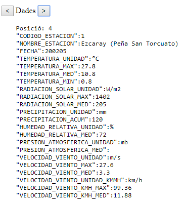

A partir de l'arxiu estaciones_meteo.js, el qual té un objecte json. Crear una variable amb el contingut de la variable json.
L'objectiu de l'exercici és crear un nou objecte json amb les dades de la variable json original, però estructurada diferent. Doncs, l'estructura actual no és fàcil de tractar.
Es pot veure, via algun validador JSON, que hi ha un únic camp arrel anomenat "data" el qual conté un array d'objectes JSON molt simples (amb un únic camp i valor per cada objecte/posició de l'array). Dins l'array es van repetin periodicament els valors dels camps dels objectes JSON així:
"CODIGO_ESTACION",
"NOMBRE_ESTACION",
"FECHA",
"TEMPERATURA_UNIDAD",
"TEMPERATURA_MAX",
"TEMPERATURA_MED",
"TEMPERATURA_MIN",
"RADIACION_SOLAR_UNIDAD",
"RADIACION_SOLAR_MAX",
"RADIACION_SOLAR_MED",
"PRECIPITACION_UNIDAD",
"PRECIPITACION_ACUM",
"HUMEDAD_RELATIVA_UNIDAD",
"HUMEDAD_RELATIVA_MED",
"PRESION_ATMOSFERICA_UNIDAD",
"PRESION_ATMOSFERICA_MED",
"VELOCIDAD_VIENTO_UNIDAD",
"VELOCIDAD_VIENTO_MAX",
"VELOCIDAD_VIENTO_MED",
"VELOCIDAD_VIENTO_UNIDAD_KMMH",
"VELOCIDAD_VIENTO_KMH_MAX",
"VELOCIDAD_VIENTO_KMH_MED"
Per comprovar que el procés s'ha fet correctament es pot validar, sabent que, l'objecte original té un array de 75240 posicions i el nou objecte JSON té un array dins el camp 'data' amb 3419 posicions.
Una vegada generat el nou array cal programar els 2 botons i que al carregar la pàgina s'omplin els següents span's amb els valors de la posició 0.
|
IMATGE PER SIMULAR EL COMPORTAMENT EN CAS DE PRÉMER EL BOTÓ ">"  |
La següent fase de l'exercici és generar un nou objecte JSON a partir de l'anterior. El nou objecte tindrà un camp data de tipus array i dins objectes JSON, un per cada estació, amb l'estil següent:
let nouJson = { data: [
{
"CODIGO_ESTACION": valor,
"NOMBRE_ESTACION": valor,
observacions: [
{
"FECHA": valor,
"TEMPERATURA_MAX": valor,
"TEMPERATURA_MED": valor,
"TEMPERATURA_MIN": valor,
"RADIACION_SOLAR_MAX":valor,
"RADIACION_SOLAR_MED":valor,
"PRECIPITACION_ACUM":valor,
"VELOCIDAD_VIENTO_KMH_MAX":valor,
}, {
},
...
]
},{
},
...
]
}
Per cada estació en el camp observacions hi haurà un array amb totes aquelles dades dels diferents dies en els quals el camp "TEMPERATURA_MAX" no sigui null. És a dir, per cada registre de l'array generat en la FASE 1, només es tindran en compte els registres que el camp "TEMPERATURA_MAX" no sigui null. De tots els camps només es desaran els indicats aquí dalt.
Compte! Les dades d'una mateixa estació no estan ordenades. Per tant en poden apareixer duran el tractament de tota la variable JSON.
En total hi ha 19 estacions meteorològiques diferents:
IMATGE PER SIMULAR EL COMPORTAMENT DESPRÉS DE GENERAT LA NOVA VARIABLE JSON
Per l'estació amb codi 1 de Ezcaray, mostrar una taula amb les 173 observacions que consten. Repetir la capçalera cada 20 files.
Es vol que aquesta taula es pugui visualitzar ordenada segons algun dels seus camps. Per defecte es vol ordenada per "FECHA", però hi ha d'haver alguna manera que permeti, en qualsevol moment, que l'usuari la pugui ordenar pel camp que desitgi: "FECHA", "TEMPERATURA_MAX","TEMPERATURA_MED","TEMPERATURA_MIN","RADIACION_SOLAR_MAX","RADIACION_SOLAR_MED" o "VELOCIDAD_VIENTO_KMH_MAX"
IMATGE PER SIMULAR EL COMPORTAMENT DESPRÉS DE GENERAT LA TAULA AMB LES DADES DE L'ESTACIÓ DE CODI 1